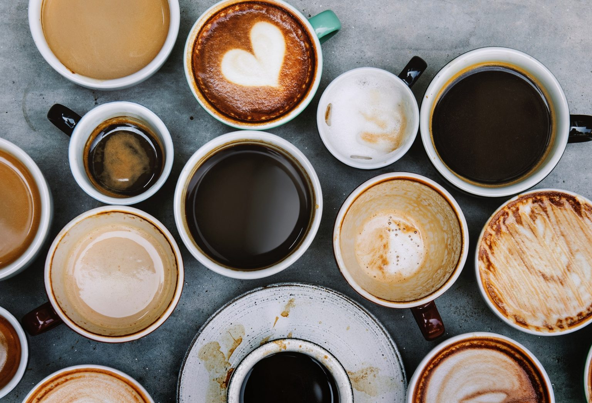

Cà phê là thức uống quá đỗi quen thuộc của mỗi người từ Á đến Âu. Tuy nhiên, ngoài hương vị cơ bản đặc trưng vốn có thì từ cà phê người ta đã sáng tạo ra rất nhiều thức uống hấp dẫn khác. Dưới đây là list 5 thức uống được lấy nguồn cảm hứng từ cà phê, cùng điểm xem chúng ta đã ăn và uống bao nhiêu món từ cà phê rồi nào!
Cà phê - thức uống yêu thích của mọi người